1 / 26
Pokročilé mapování a PBR
- Vzhled detailů povrchu ovlivňuje geometrie, stínovací normála a směrový odraz světla.
- Témata: vnímání tvaru, height a normal mapy, mikrofacetový model, tečný prostor a parallax mapping.
BI-PGA
1 / 26
2 / 26
3 / 26
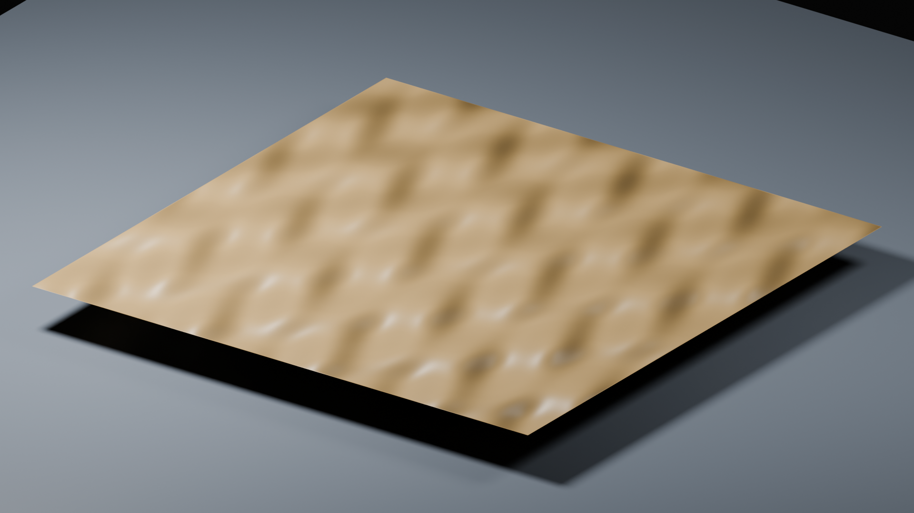
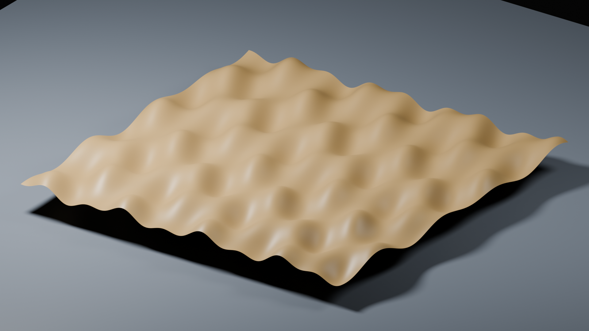
Která reprezentace změní okraj dlaždice?
Displacement mění skutečnou geometrii a siluetu. Bump a normal mění pouze normálu použitou při stínování.
4 / 26
5 / 26
6 / 26
7 / 26
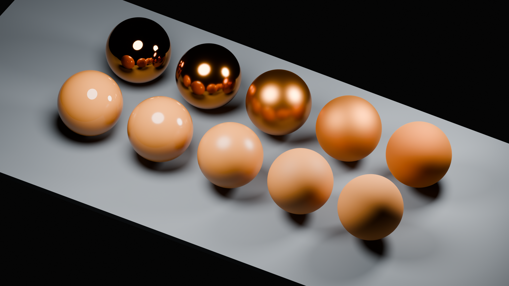
Je široký odlesk totéž jako slabší násobek úzkého odlesku?
Ne. Roughness mění distribuci mikrofacet, takže se mění tvar celého laloku. Expozice mění náhled všech příspěvků společně.
8 / 26
9 / 26
10 / 26
11 / 26
12 / 26
13 / 26
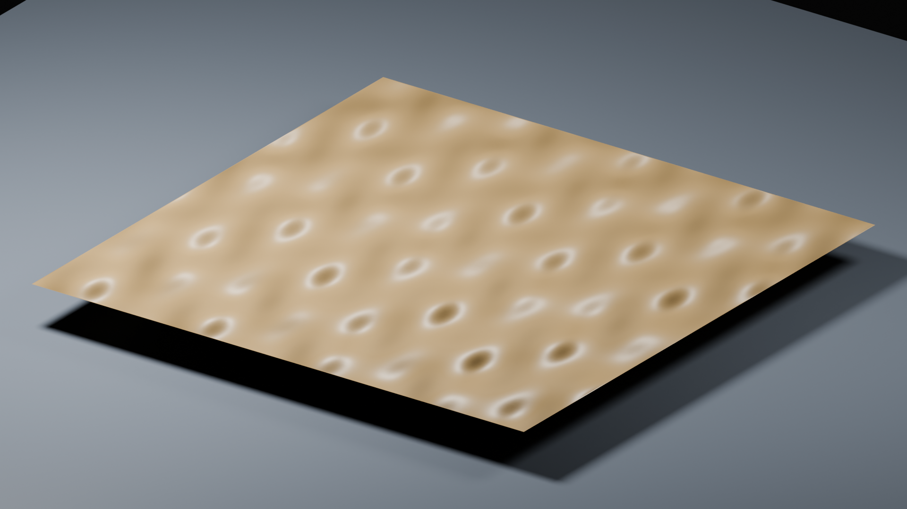
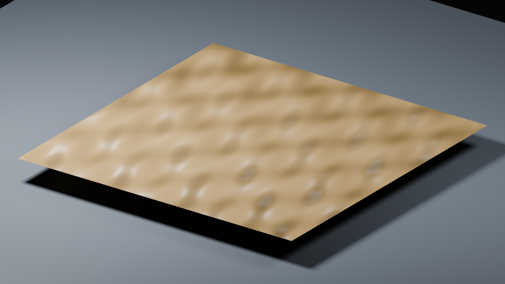
Může chybná normal mapa změnit siluetu objektu?
Nezmění geometrii ani siluetu. Přesto může výrazně změnit osvětlení a vyvolat dojem obrácených prohlubní.
14 / 26
15 / 26
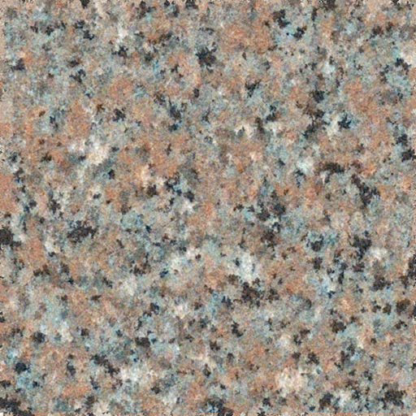
16 / 26
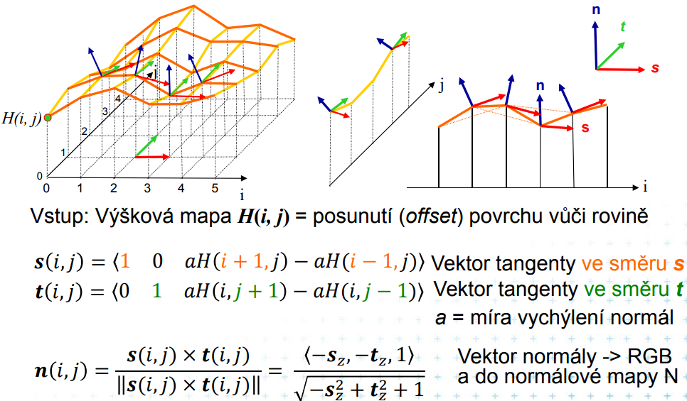
17 / 26
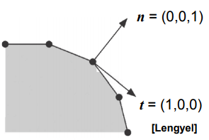
18 / 26
Co se stane se směrem vycházejícím z kladné tečné y, když zapomeneme handedness?
N = normalize(N)
T = normalize(T - N * dot(N, T))
B = tangentSign * normalize(cross(N, T))
n = normalize(T * nt.x + B * nt.y + N * nt.z)Správné výsledky jsou (0; 0,6; 0,8) a (0; −0,6; 0,8). Chybné znaménko převrátí orientaci detailu.
19 / 26
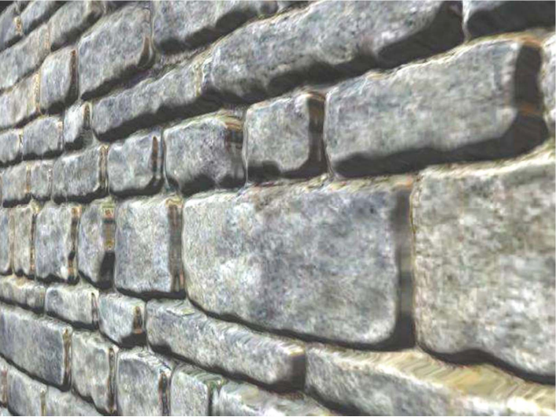
20 / 26
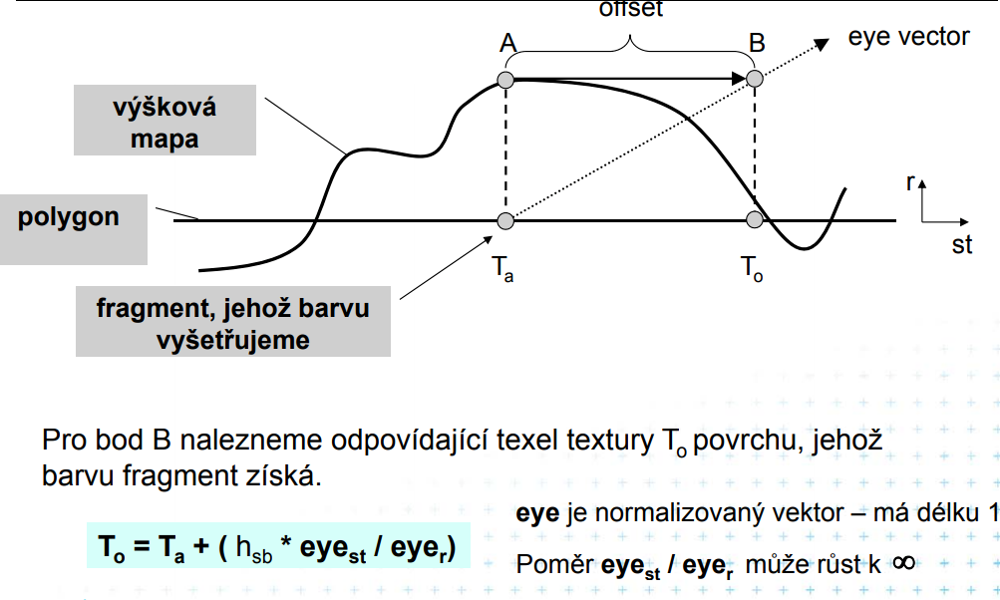
21 / 26
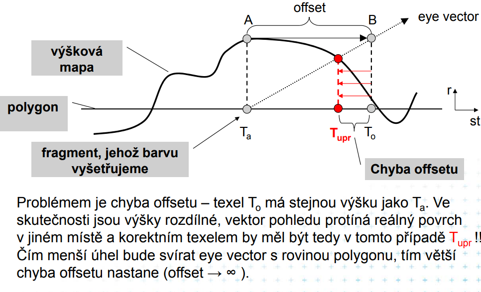
22 / 26
Kde se při tečném pohledu nejdřív projeví rozdíl mezi normal mapou a POM?
POM mění polohu detailu v obraze a jeho lokální zákryt. Bez zásahu do masky polygonu však nadále neřeší správnou siluetu.
Navazující úloha: Zvyš počet kroků v profileHit. Vysvětli, proč může být méně vrstev dostačující při čelním pohledu, ale selhávat při tečném.
Model se načte při zobrazení dílny.
23 / 26
24 / 26
Pomůže při zmenšení šachovnice automaticky přechod z 1K na 8K?
Samotné zvýšení rozlišení může přidat další vysoké frekvence. Potřebujeme integraci přes stopu pixelu, v praxi filtrování, mipmapy a podle situace anizotropii.
Model se načte při zobrazení dílny.
25 / 26
Jak poznáme, že lepší obraz vznikl změnou materiálu, a nikoli expozice?
blender --background --factory-startup --python render-source.py -- ./moje-renderyBez kontroly ostatních parametrů to z obrázku samotného obecně nepoznáme. Změny proto zapisuj a vždy porovnávej stejně velké výřezy.
26 / 26
PBRT, 4. vydání · Radiometrie · Blender: normal map a Non-Color.
Zdrojový Blender skript · Světelná scéna .blend · Displacement scéna .blend.
Blender 4.5: světelné cesty · PBRT: Monte Carlo a chyba odhadu · Blender: normal map a barevná interpretace.